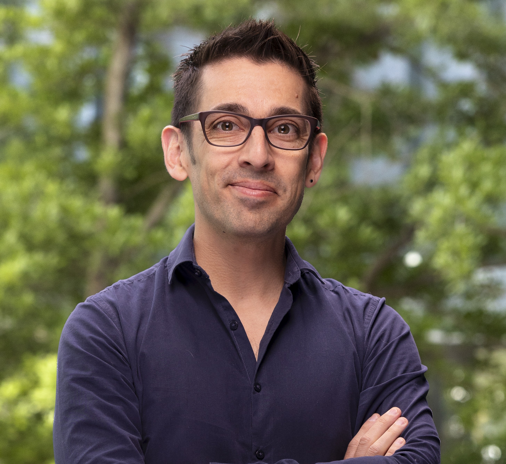

Nuestro camino
Cómo pasamos de una simple pregunta a un proyecto con impacto real.
1. La pregunta inicial
Todo comenzó con una pregunta que se instaló en nuestras cabezas desde las primeras semanas del semestre: ¿cómo afectan los microbasurales a la salud de perros y gatos callejeros? Fue el punto de partida de todo: horas de conversación en equipo, de acotar ideas y definir por qué nos importaba.
2. Definiendo el territorio
Con la pregunta definida, recibimos la visita de tres mentores en ciencia ciudadana. Gracias a sus comentarios, entendimos que necesitábamos enfocar nuestro territorio de estudio, y así fue como La Cisterna se convirtió en el corazón de nuestra iniciativa.
3. La ciencia en terreno
Queríamos vivir la experiencia. Salimos a terreno junto al ROC (Red de Observadores de Chile) al Observatorio Astronómico Nacional, en Cerro Calán. Esa jornada nos dejó una certeza: la ciencia ciudadana funciona cuando la gente siente que su participación importa.
4. La validación profesional
Finalmente, buscamos una mirada experta que nos ayudara a ir más allá de lo evidente. Contactamos al profesor Felipe Díaz, del Departamento de Ingeniería Química y Biotecnología, experto en sustentabilidad, economía circular y metabolismo urbano.
En nuestra conversación con él, comprendimos que no basta con atacar el síntoma —los microbasurales— sino que hay que mirar el problema de forma más amplia, entendiendo sus causas y trabajando junto a la comunidad para lograr un cambio real y duradero.

Este ha sido nuestro camino hasta ahora: un proyecto que crece con cada conversación, cada salida y cada persona que se suma a la causa.